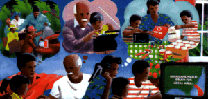

American Red Cross
American Red Cross Federal Emergency Management Agency
Federal Emergency Management Agency
Are you ready for a Hurricane? American Red Cross Federal Emergency Management Agency  National Oceanic and Atmospheric Administration
National Oceanic and Atmospheric Administration
Know what hurricane WATCH and WARNING mean:
Watch: Hurricane conditions are possible in the specified area of the Watch, usually within 36 hours.
First aid kit and essential medications
Hurricanes in the United States are most threatening along coastlines. But such fierce storms also have been known to build up enough momentum to carry destructive winds inland for hundreds of miles. Heavy rains, flooding, and tornadoes add to the damage hurricanes can inflict upon home and community.
Prepare for a hurricane by completing each item on the checklist below. Then meet to discuss and finalize your Family Disaster Plan.
Put together a disaster supplies kit.
Location of Disaster Supplies Kit:________________________
Call your local emergency management or planning and zoning
office to find out if you live in an area that could flood during
a hurricane or heavy rains.
Flood area: ___Yes ___No
Prepare an evacuation plan in case you must leave. Clear your
plan with the relatives or friends you plan to stay with - or
plan to go to a Red Cross shelter. Add to your Disaster Supplies
Kit a map marked with two alternative routes to your destination.
Evacuation plan completed:_________________(date)
Write instructions on how to turn off gas and water if advised
to do so by local authorities.
Instructions written:______________________(date)
Make a list of items to bring inside in the event of a storm.
Keep this list in your Disaster Supplies Kit.
List completed:___________________________(date)
Buy any other items needed to board up windows and protect
your home well ahead of time. Pre-cut plywood to fit windows so
that you can quickly cover windows.
Items purchased to protect home:_________________(date)
And remember...when a hurricane, earthquake, fire, flood, or other emergency happens in your community, you can count on your local American Red Cross chapter to be there to help you and your family. That’s been the role of the Red Cross for more than 100 years.
For more information, ask for the following information from your local Red Cross chapter, emergency management office, or National Weather Service office.
Against the Wind: Protecting Your Home From Hurricane Wind
Damage (ARC 5023)
Hurricanes...the Greatest Storms on Earth (ARC 5030)
NOAA PA 94053
ARC4454
Rev. July 1994